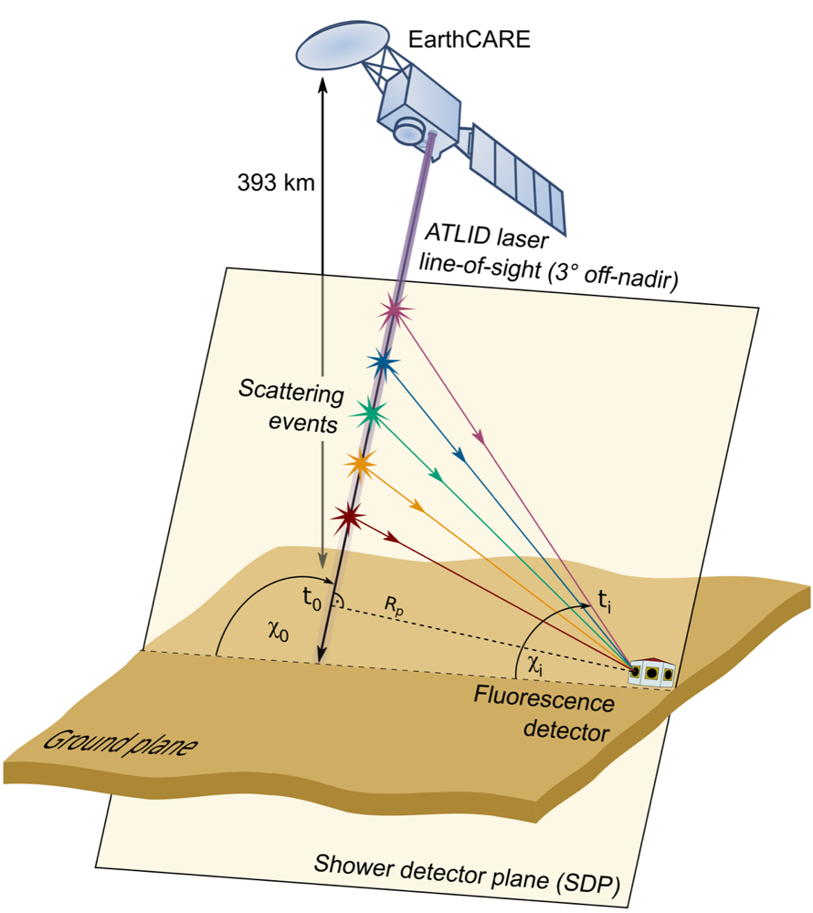
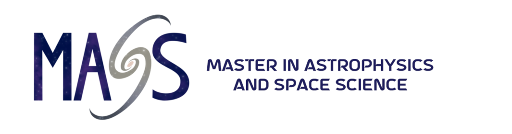
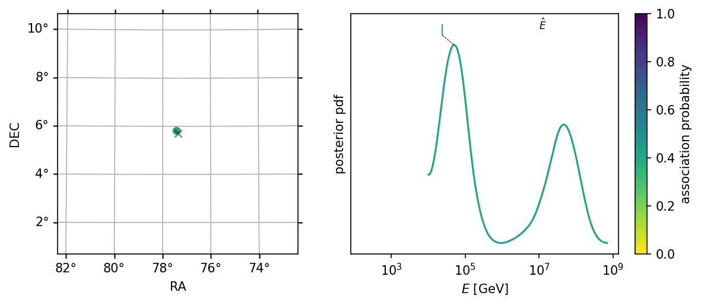
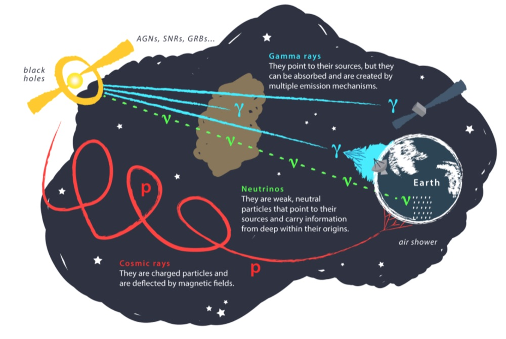
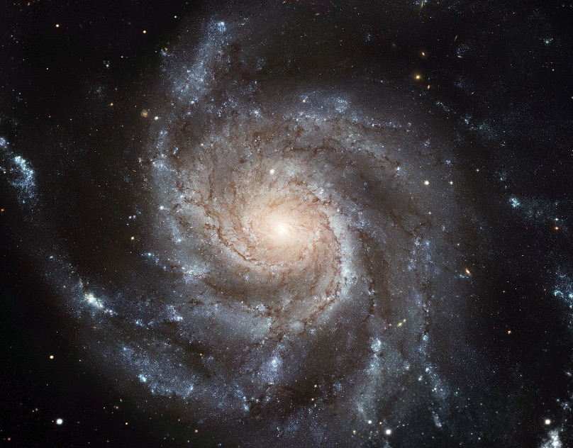

These days, I find myself increasingly drawn to multi-messenger astrophysics, particularly in its application to the study of active galactic nuclei. I am intrigued by the potential of computational and statistical techniques in unraveling the mysteries surrounding these fascinating objects.
| Type | Title & venue | Year |
|---|---|---|
| Talk | Observation of EarthCARE Laser Emissions with the Pierre Auger Observatory, International school of Cosmic Ray Astrophysics, Italy. | 2026 |
| Poster, awarded | Observations of EarthCARE laser emissions with the Pierre Auger Observatory, 13th KSETA Plenary Workshop, Germany. | 2026 |
| Talk | Constraining the High Energy Emission from NGC 1068, VII CI-SoDoFi, Dominican Republic. | 2026 |
| Poster | Comparison of SDSS and Gaia QSO data: Searching for anomalies in QSO spectra, 15th SCSLSA, Serbia. | 2025 |
| Workshop | Use of Programming for Teaching Astronomy, Astronomy Workshop for Teachers at the Dominican Republic, Online. | 2024 |
| Talk | Month of Astronomy in the Dominican Republic, 6th Shaw-IAU Workshop on Astronomy for Education, Online. | 2024 |
| Panel | Astronomy for a better world, American Astronomical Society Winter Meeting, United States. | 2024 |
| Poster | The Multi-messenger Astrophysics Approach and the MAGIC Telescopes, Giambiagi Winter School on Cosmology, Argentina. | 2023 |
| Poster | Study of spiral galaxies and their environment, PLANCKS, Italy. | 2023 |

The two largest observatories dedicated to UHECR measurements are the Pierre Auger Observatory (Auger) and the Telescope Array (TA), which have been operating in the Southern and Northern Hemispheres, respectively, for nearly two decades. Despite their similar detection concepts, the Pierre Auger Observatory and the Telescope Array report significant differences in the observed UHECR energy spectrum above approximately 30 EeV. Accurate reconstruction of air-shower properties using fluorescence observations requires precise knowledge of the optical efficiency of the telescopes and the atmospheric conditions. The EarthCARE (Earth Cloud, Aerosol, and Radiation Explorer) satellite is designed to improve our understanding of clouds and aerosols in the Earth's atmosphere. Its onboard Atmospheric Lidar (ATLID) emits laser pulses that have been regularly detected by both the Pierre Auger Observatory and the Telescope Array. These detections establish a unique synergy between satellite-based Earth observation and ground-based astroparticle physics. The observatories benefit from the ATLID laser as a well-characterized, external reference light source for cross-calibration of their energy scales, while simultaneously contributing to satellite validation studies. This doctoral research focuses on the analysis of EarthCARE satellite overpasses detected by the Pierre Auger Observatory.

In my thesis, I investigate how the upcoming Cherenkov Telescope Array Observatory (CTAO) can test competing high-energy emission models for NGC 1068, the first non-blazar AGN linked to neutrino emission. Using Gammapy simulations of 50, 100 and 150 hour CTAO observations, I compare scenarios driven by starburst activity and AGN-powered winds. The results show that most models are detectable within 100 hours of observation, and by 150 hours CTAO can marginally distinguish between different emission mechanisms. Whether detected or not, these observations will provide powerful constraints on particle acceleration in obscured AGNs and help clarify the origin of neutrinos and gamma rays in Seyfert galaxies.

During a three month internship, I studied the association probability between the high-energy neutrino event IC170922A and the blazar TXS 0506+056 using Bayesian statistical techniques. We applied two different spectral models—power-law and pγ—to analyze how varying assumptions about the source spectrum affect the probability of a connection between the neutrino event and the blazar. You can read my internship report "Bayesian ICECAT Analysis". This research contributed to the article "Impact of multi-messenger spectral modelling on blazar-neutrino associations".

